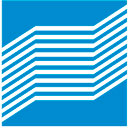
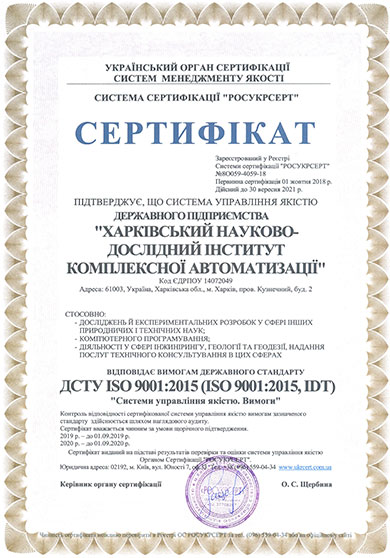
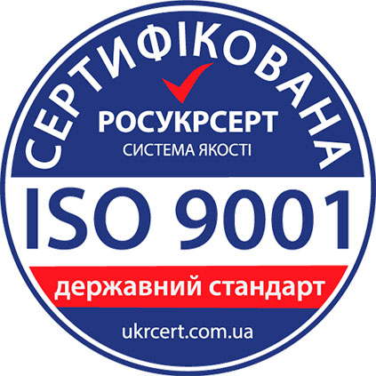
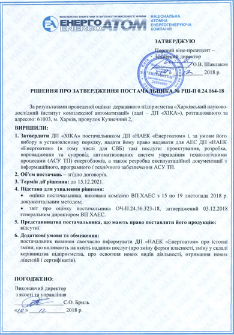

О НАС
Государственное предприятие «Харьковский научно-исследовальский институт комплексной автоматизации»
(ГП «ХИКА») образован в 1992 году на базе Всесоюзного Центрального НИИ комплексной автоматизации
(ЦНИИКА, г. Москва) - является головным институтом Министерства энергетики и угольной промышленности Украины по разработке
и внедрению управляющих и информационно-вычислительных систем (УВС и ИВС) верхнего уровня
в составе АСУ ТП энергоблоков ТЭС и АЭС.
УСЛУГИ
Создание и внедрение разработанных ГП «ХИКА» систем проводится совместно с отечественными и зарубежными организациями:
- с разработчиком технических средств управления НПО «Импульс», НПО «Радий»;
- проектными институтами (Харьковэнергопроект, Киевэнергопроект);
- технологическими организациями (ЗАО «ЛьвовОРГРЭС», ООО «ЕМВ-ЭНЕРГО», ООО «Балтийские информационные системы» (Литва), ООО «Московский завод «Физприбор».
Разрабатываемое ПО проходит процедуру верификации, испытания проводятся:
на
уникальном полигоне ГП «ХИКА», на предприятии изготовителе технических средств, на объекте при вводе в эксплуатацию.
Поддержка OPC технологии. Собственная уникальная SCADA система.
Среда функционирования ПО ОС UNIX и ОС Windows.
ПАРТНЁРЫ
Институт проводит разработку и внедрение информационного и программного обеспечения, а также эксплуатационной документации для:
- приема и первичной обработки информации от ПТК, ТСА, БД, УД;
- оперативного представления информации на АРМ оператора (технологические параметры, сигнализация нарушений, квитирование событий, распечатка отчетов, контроль доступа);
- архивирования измеряемых и расчетных параметров, ведения баз данных;
- обеспечения функции дублирования при передаче, хранении и отображении информации в виде фрагментов технологического цикла производства (видеокадров), графиков, гистограмм, таблиц.

СЕРТИФИКАТЫ
ГП «ХИКА» имеет сертификат на систему управления качеством, зарегистрированный в системе сертификации «РОСУКРСЕРТ» №8О059-4059-18 от 01.10.2018 г. и утвержден поставщиком ГП НАЭК «Энергоатом» (РШ-П 0.24.164-18 от 10.12.18 г.).



КОНТАКТЫ
Мы находимся по адресу:
г. Харьков, пер. Кузнечный, 2
Номер телефона:
(057) 731-61-17
(057) 732-65-66
email:
xika@ukrpost.net